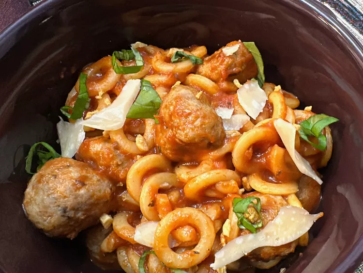

Fill a large pot with lightly salted water and bring to a rolling boil. Stir in pasta and return to a boil. Cook, uncovered, stirring occasionally, until tender yet furm to the bite, about 8 minutes. Reserve 1/2 cup pasta water, drain pasta, and set aside.
Add tomato sause, Cantanzaro herbs, sugar, salt, and pepper to the pot; bring to a simmer over medium-low heat.
Meanwhile, cut each meatball into 4 pieces. roll each piece into a mini meatball. Drop meatballs into sauce; simmer until heated through, about 10 minutes. If sauce seems to thick, thin out by adding pasta water, 1 tablespoon at a time.
Stir in cooked pasta rings. Garnish with basil leaves and Parmesan shavings and serve immediately.